All sixteen backgrounds and props generated this session, shown against the approved original it had to stay continuous with. Generated through the local Sprites instance on the same model and style pipeline as the existing game art.
16 of 16 drawn16 installed into the game3 generating now3 re-rolled21 Sep 2026
Batch A
installed
The three rooms that already existed in some other light. Each one inherits a promoted continuity original, so the test is whether the furniture survived the repaint.
Bedroom, late night ★
backgrounds/bedroom_night_late
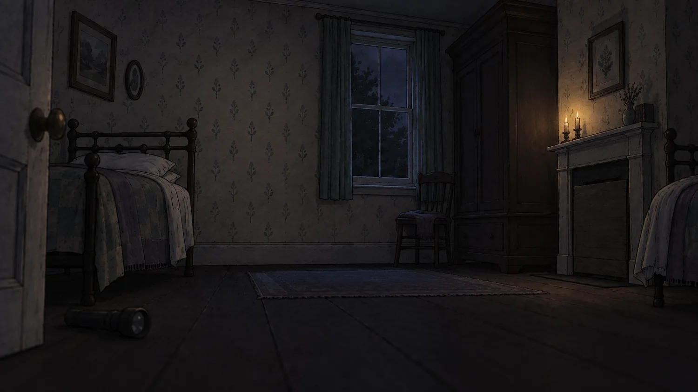
Room continuity holds — same bed, same window, same wallpaper, same weight of dark.
It missed its one framing instruction. The brief asks for the wall beside the bed filling more of the frame than before, and the camera has not moved. This is the shot the three knocks come out of, so the wall is the subject. It's the only priority shot in the set. I'd regenerate it.
Used by
c2s07_she_comes_back · c1s07_three_knocks
Installed
public/assets/backgrounds/bedroom_night_late.webp
Inherits from
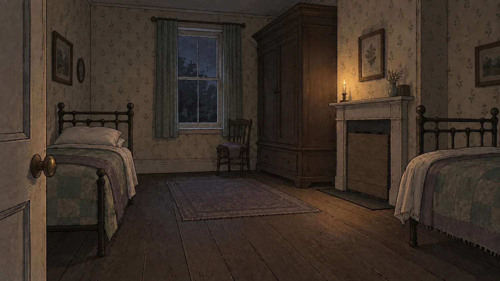
bedroom_night
Entrance hall, morning
backgrounds/entrance_hall_morning
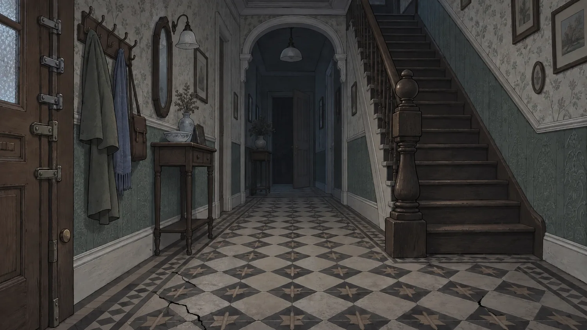
Textbook repaint. Same coats on the same hooks, same hall table, same cracked encaustic tile in the same place. Only the light changed, which is the entire job.
Same runner, same pictures, same lighter rectangle on the wallpaper where the painting used to hang — which is canon from chapter one onward and had to survive.
One disagreement, not a fault. The manifest spec asks for four-panel dark doors; these came out pale. So did the doors in the approved original it inherited from. The spec and the canon original contradict each other, and the original won. Flagging rather than fixing.
Used by
c1s06_bathroom
Installed
public/assets/backgrounds/hallway_dusk.webp
Inherits from
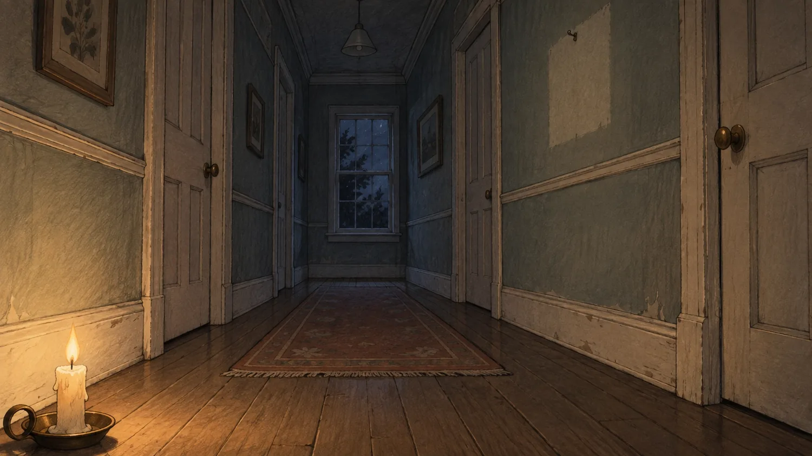
hallway_night
Batch B
installed
Two rooms that change state, and the first room in the game drawn from nothing.
Parlour, wall opened
backgrounds/parlor_wall_open
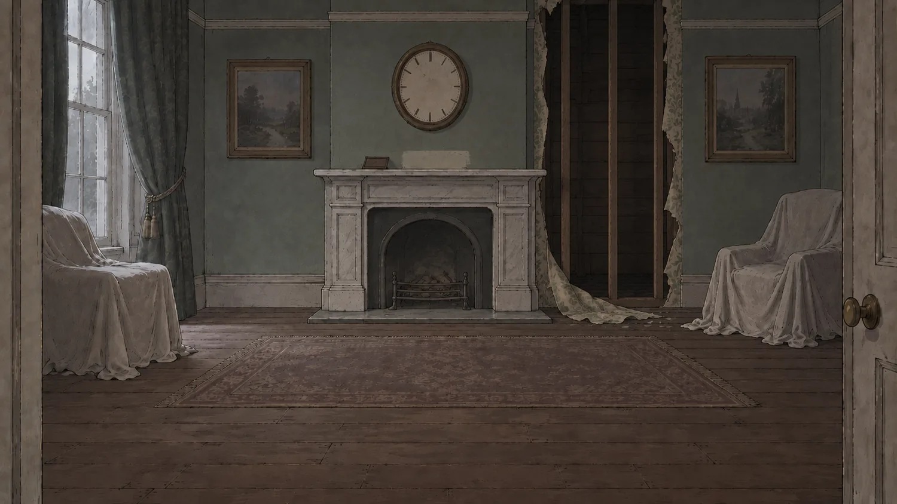
The room is faithful down to the props — same handless clock, same photo and folded cloth on the mantel, same dust sheets over the same two chairs, same rug, same brass knob on the door. The torn strip, the bare studs and the curl of paper on the floor all read exactly right, and the opening stays a black band rather than becoming a lit corridor.
One deviation. The brief wanted the camera close and square to the opened wall; it kept the wide parlour framing instead. That buys continuity at the cost of intimacy. Your call whether the trade is worth a second pass.
Used by
c2s02_hollow
Installed
public/assets/backgrounds/parlor_wall_open.webp
Inherits from
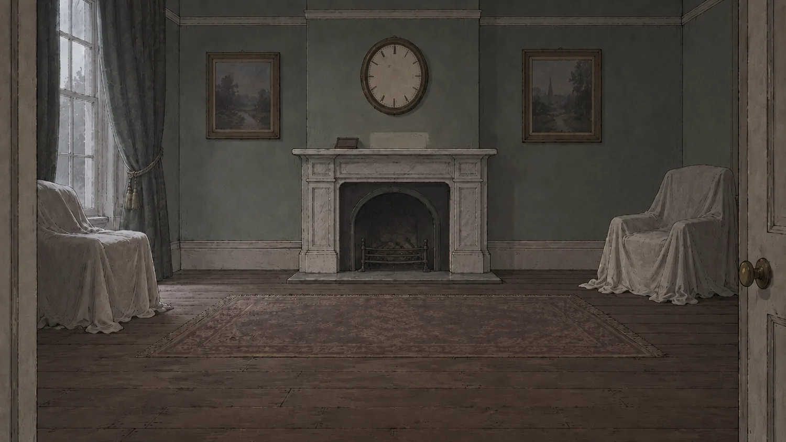
parlor_morning
Box room, night
backgrounds/box_room_night
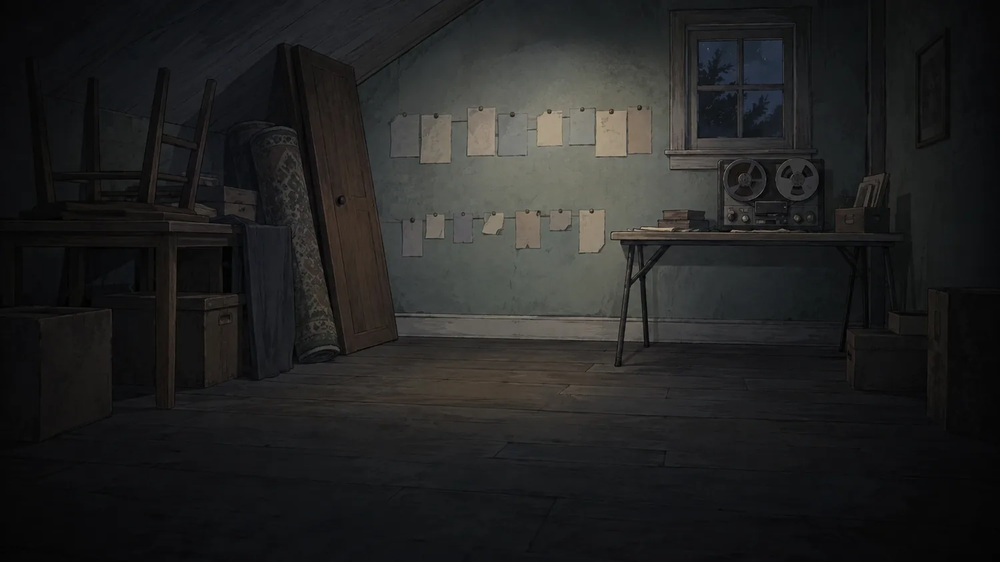
The first room here with no prior original, so it carries the house on palette alone — and it holds. Same green-grey walls, same cream skirting, same dark boards, same night window.
It got the detail that mattered: two rows of pinned paper, one at chest height and one much lower. That lower row is the whole point of the scene. The reel is threaded and about a third used, as asked.
Softer than the brief's hard cone with everything outside it black — the left half reads as ambient dim rather than torchlight. But the room reads, and it's a background with text over it.
Used by
c2s06_what_it_kept
Installed
public/assets/backgrounds/box_room_night.webp
No continuity original. First design. Inherits the house palette and the ART_BIBLE style layer only.
Hallway, night, far
backgrounds/hallway_night_far
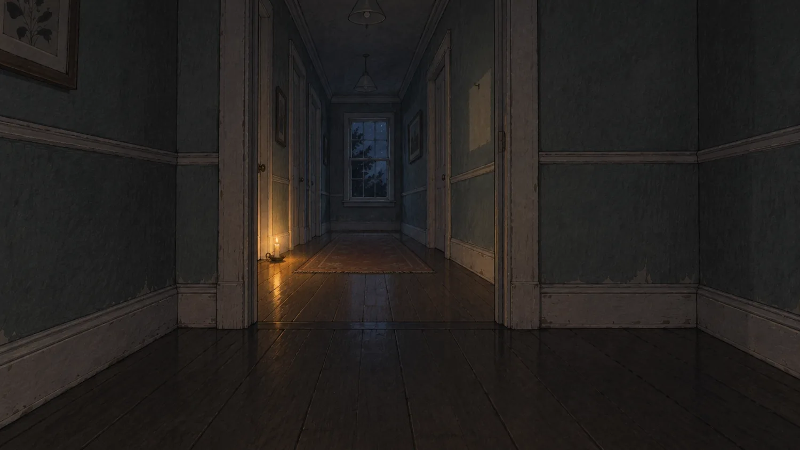
Does precisely what the brief asks. The candle is reduced to a distant warm point, the foreground is dark and empty, and the near doorway frames the shot. "Nothing is in the foreground — and it must look like there could be."
Nothing in the game uses it. It's declared in tools/art-manifest.ts:273 as the stalking shot, but the comment at src/content/chapter01/s03_first_signs.ts:271 says that beat was rewritten onto landing_night instead. So it's a finished shot in hand with no scene. I've left it installed rather than delete a designed frame.
Used by
nothing — orphan
Installed
public/assets/backgrounds/hallway_night_far.webp
Inherits fromhallway_night
Batch C
installed
Two of these carry style layers the earlier plates did not. The kitchen is a safe room and is briefed warm and charming on purpose; the doorframe is a wrong tier, briefed for bruised purple shadow and exactly one thing off.
Coat closet, dark
backgrounds/coat_closet_dark
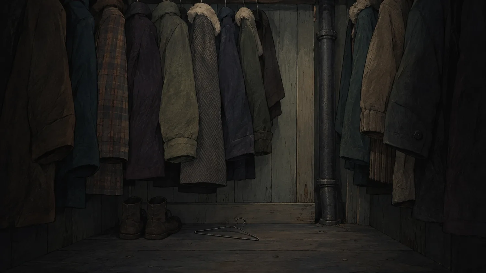
Everything the brief asks for is in it: eleven coats crowded on the rail, bare board behind them, the cast-iron pipe running floor to ceiling with a gap beside it, the boots and the dropped wire hanger. The camera sits low, at the height of someone already inside.
It over-delivered in one place. The brief wants the coats are shapes rather than garments — one thin line of hall light and nothing else. You can read plaid, herringbone, fur trim and a button. It is more beautiful and slightly less frightening than asked.
Used by
c2s05_occupied — the hiding place that is already occupied
Installed
public/assets/backgrounds/coat_closet_dark.webp
No continuity original. First design. Inherits the house palette and the ART_BIBLE dread style layer only.
Kitchen, night
backgrounds/kitchen_night
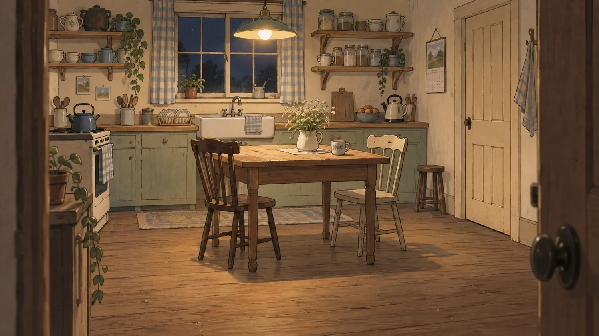
This one looks wrong next to the others and is not. The kitchen is a safe room, and its brief carries the safe style layer word for word: warm amber light from a findable source, inviting composition, lived-in and gently humorous details, safe, charming, nothing is wrong. The dread layer never applies to it.
Checked item by item — scrubbed deal table, two mismatched chairs, enamel sink under the window with a cloth over the tap, open shelves of ordinary crockery, a kettle, a calendar on a nail, a door that shuts, one bulb under a plain shade, corners soft rather than black. All present.
One quibble. The electric kettle on the right reads modern for this house.
Used by
c2s06_what_it_kept · c2s07_she_comes_back
Installed
public/assets/backgrounds/kitchen_night.webp
No continuity original. First design. Safe-room style layer, not the dread one.
Doorframe, uncrossed
cg/doorframe_uncrossed
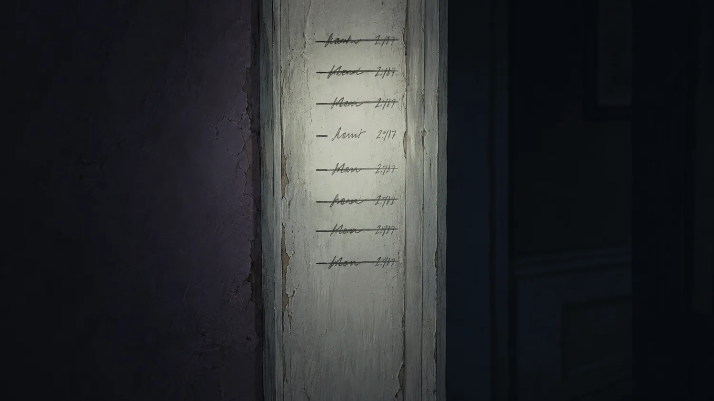
It got the thing that carries the scare. Every height mark is struck through with one ruled pencil line except one, a little above the middle. That is the brief's exactly ONE thing subtly wrong in the image and nothing else, and it is placed correctly.
The bruised purple wall is not a palette error — it is in the brief. This is a wrong tier plate: deep blue-black, sickly pale tones, cold light, the warm drawing gone quietly wrong rather than a different darker picture.
Two misses, both in the text. There are eight marks, not the nine years the brief asks for, and the dates are all the same illegible glyph rather than nine different years. Handwriting is the one thing this pipeline cannot be made to do reliably, so I would not spend a regenerate on it — illegible pencil in a torch beam is defensible, and the prose says what they are. Your call.
Used by
c2s06_what_it_kept
Installed
public/assets/cg/doorframe_uncrossed.webp
Inherits from
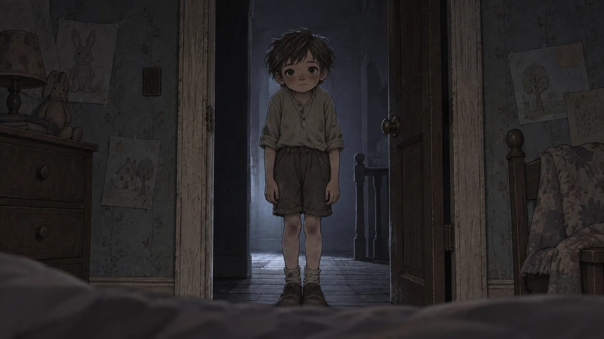
cg/doorway_child
Batch D
installed
The corner of the hall under the stairs, and the two objects the player carries. Both props are briefed on the safe style layer and came back on transparency, as items must.
Under the stairs
backgrounds/under_stairs
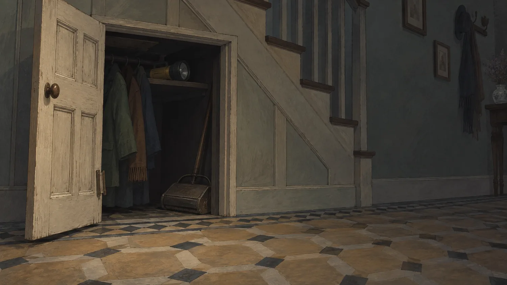
The continuity that mattered here is the floor, and it holds — the same ochre, black and cream encaustic tile as the entrance hall, laid in the same pattern. The waist-high four-panel door stands open on one loose hinge, with coats on a low rail, a carpet sweeper and the shelf behind them.
It also settled an open conflict. The room brief calls for a heavy old rubber-cased flashlight on that shelf; the dedicated item brief calls for brushed metal with a ribbed grip and a wide bell head. Same object, same scene, two descriptions. The torch it drew on the shelf reads as the same bell-head metal object as the icon below, so the two now agree without anyone having to choose.
Framing is a touch wide. The brief asks for low, kneeling, close to the little door; the camera stands a step further back than that.
Used by
c2s04_crawlspace
Installed
public/assets/backgrounds/under_stairs.webp
Inherits fromentrance_hall_dusk
The two props
items/house_flashlight · items/phone
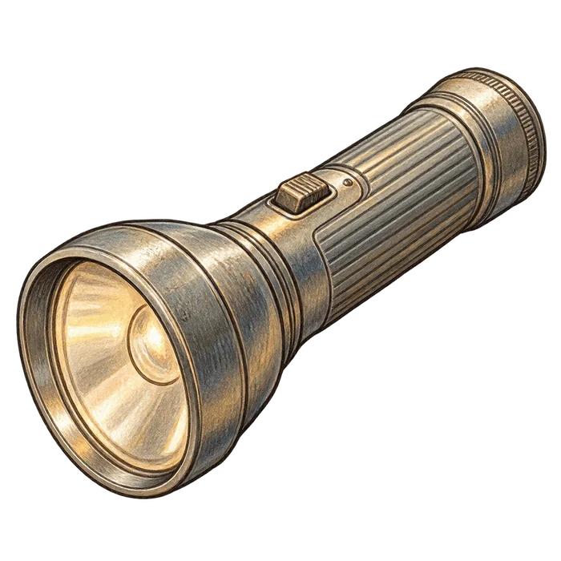
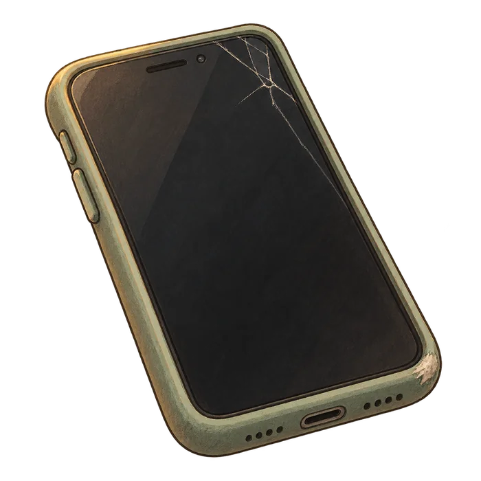
The flashlight is the brief exactly: heavy mid-century American, brushed metal barrel, ribbed grip, wide bell head, the metal dulled and thumb-polished at the switch.
The phone looks out of place beside a reel-to-reel and a carpet sweeper, and is supposed to. Its brief reads an ordinary modern smartphone in a soft case with a corner scuff, screen dark, a hairline crack across one corner of the glass — all four present, and the faded green case sits inside the safe palette.
Both arrived with a real alpha channel and both went through the defringe step on the way in — 101 keyed edge pixels off the flashlight, 563 off the phone. That residue is invisible at 1:1 and becomes a coloured halo the moment a sprite is scaled, so it only ever gets caught by something that looks for it every time.
No continuity original. First designs. Safe-room style layer, single object on transparency.
Batch E
installed
Each of these waited on a plate from an earlier batch, so nothing was generated before the thing it has to match. One of the three came back wrong and took three rolls to get right.
Fingernail marks
cg/fingernail_marks
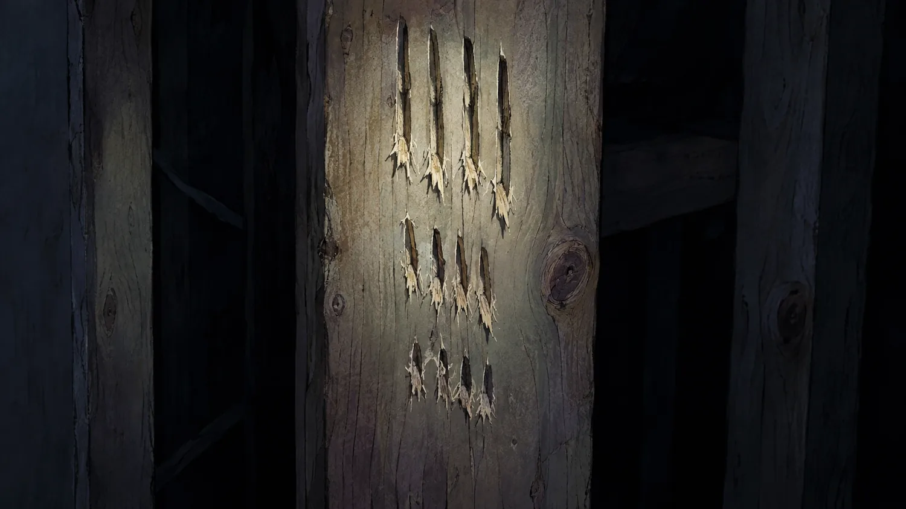
The best plate in the set. This is chapter two's single piece of gore and the brief is unusually exact about it — three groups of four parallel scratches, four side by side, then four below that, then four below that again, each group shorter and more ragged than the one above, the wood torn up into fine pale splinters at the bottom of every stroke.
All of it is there, including the part that is easy to lose: the light rakes across the wood at an angle, so the gouges read as depth rather than as drawn lines. And there is no blood in it. The horror is entirely in what the marks imply about how long somebody was at that stud.
Used by
c2s02_hollow
Installed
public/assets/cg/fingernail_marks.webp
Inherits fromthe opened wall
Hallway, morning
backgrounds/hallway_morning
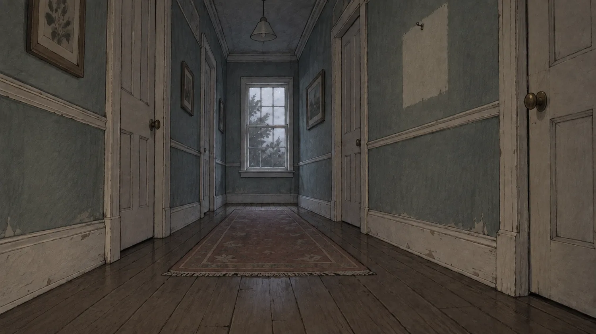
This completes the hallway in three lights — night, dusk, morning — all on the same bearing and the same one-point perspective. The runner, the pictures, the window and the lighter rectangle with its picture hook are all where the other two put them.
It got the hardest instruction right: no warm light anywhere in the frame. There is not a single amber pixel in it, which is what makes a grey morning read as worse than the candlelit night.
The doors are pale again — third plate running to inherit that from the approved hallway_night original where the spec asks for four-panel dark doors. At this point it is the spec that is out of date, not the art.
Used by
c2s01_bread
Installed
public/assets/backgrounds/hallway_morning.webp
Inherits fromhallway_night
Crawlspace, dark
backgrounds/crawlspace_dark
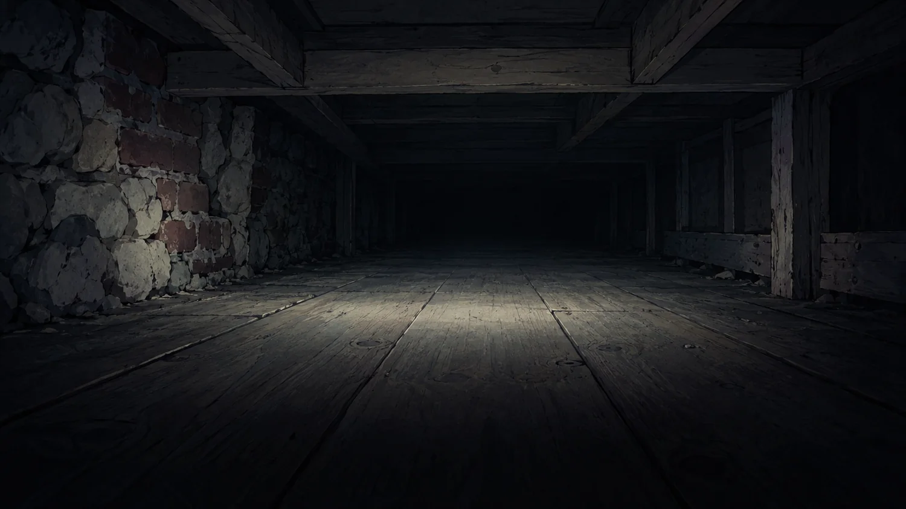
Third roll. The first came back as a full-height cellar you could walk through. That is not a cosmetic miss: chapter two's one shock is the beam finding a face much closer than the space can hold, and a geometry violation needs a space with tight, known geometry. In a cavern there is nothing to violate.
This one puts the camera at board level with the joists low overhead, the rubble stone and old brick along the left, and — the thing that matters — the boards and joists continuing past the distance where the back wall under a staircase should be, into dark. That is the one thing wrong in the picture, and nothing is drawn in the dark to help it.
A pipeline finding. Two re-rolls launched in the same instant came back byte-identical — same MD5. Rolling the same brief twice at once buys nothing. Rolls separated in time do vary. Re-roll sequentially, never in parallel.
Used by
c2s04_crawlspace
Installed
public/assets/backgrounds/crawlspace_dark.webp
Inherits fromunder_stairs
Batch F
installed
The last plate in the set, and the chapter's only shock. Held back to the end so it could be drawn against the crawlspace it appears in.
The face in the crawlspace
cg/crawlspace_face
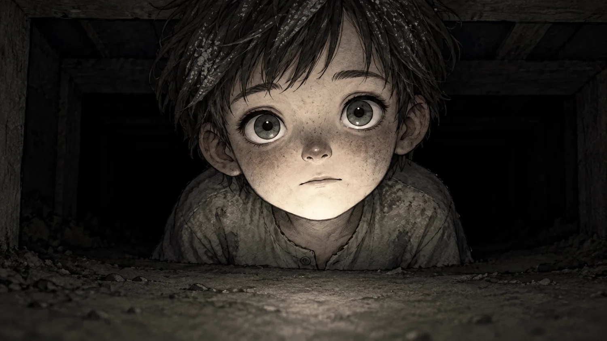
Second roll, and the difference is the whole shot. The first was lit from the front with pure black behind the face — which loses the point, because if there is nothing behind the face there is nothing for the face to contradict. Here the light sits low, and the joist bay behind is visible and plainly shallower than the distance the face is sitting at. The violation happens inside the frame.
The face itself is doing the hard thing the brief asks for: an ordinary calm face, eyes open and looking straight back, shoulders carried high and forward. Nothing about it is monstrous. It is a child, it is not doing anything, and it is in a place that cannot hold it.
Continuity is exact. Same hair, same freckles, same grey-green eyes, same buttoned shirt as the approved wall children sprite — which is what the roster inheritance was for.
Used by
c2s04_crawlspace
Installed
public/assets/cg/crawlspace_face.webp
Inherits from
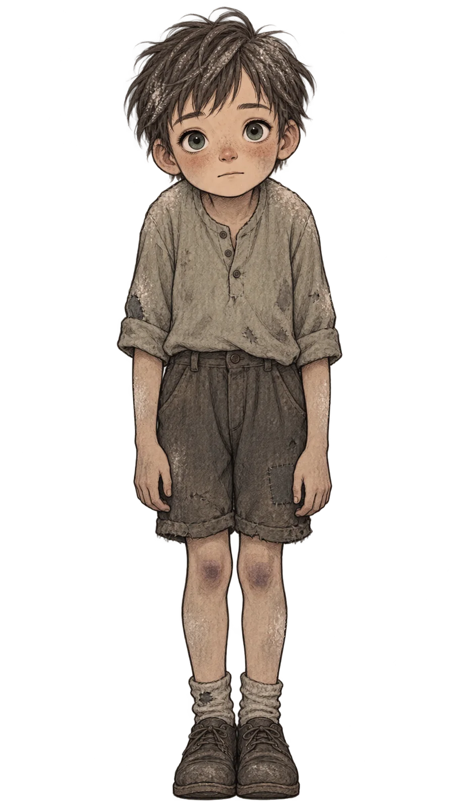
characters/wall_children
Outside the set
next
Three assets the game asks for that were not in the sixteen you approved. They arrived after the 20 September manifest run and had no brief anywhere — so while these sixteen were being drawn they could not go through the pipeline at all. The concurrent session has since briefed all three (885c943), and none of the new briefs conflicts with what is already drawn: the reel spec matches the reel already in the box room, and the night hall is an explicit repaint of the dusk one. They are next.
backgrounds/entrance_hall_nightnow briefed · repaint of entrance_hall_dusk